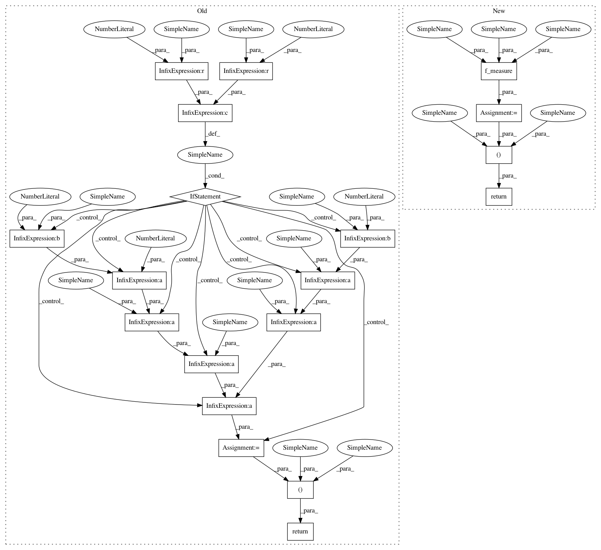

d114db1e8ef23b2b3ff1fb5d566f2c37b9ee3664,mir_eval/segment.py,,boundary_detection,#Any#Any#Any#Any#Any#,13
Before Change
// And the f-measure
F = 0.0
if P > 0 or R > 0:
F = (1 + beta**2) * P * R / ((beta**2) * P + R)
return P, R, F
def boundary_deviation(annotated_boundaries, predicted_boundaries, trim=True):
"""Compute the median deviations between annotated and predicted boundary times.
After Change
recall = np.mean(dist.max(axis=1))
// And the f-measure
f_measure = util.f_measure(precision, recall, beta=beta)
return precision, recall, f_measure
def boundary_deviation(annotated_boundaries, predicted_boundaries, trim=True):
"""Compute the median deviations between annotated and predicted boundary times.
In pattern: SUPERPATTERN
Frequency: 3
Non-data size: 19
Instances
Project Name: craffel/mir_eval
Commit Name: d114db1e8ef23b2b3ff1fb5d566f2c37b9ee3664
Time: 2014-01-17
Author: brm2132@columbia.edu
File Name: mir_eval/segment.py
Class Name:
Method Name: boundary_detection
Project Name: craffel/mir_eval
Commit Name: d114db1e8ef23b2b3ff1fb5d566f2c37b9ee3664
Time: 2014-01-17
Author: brm2132@columbia.edu
File Name: mir_eval/segment.py
Class Name:
Method Name: boundary_detection
Project Name: craffel/mir_eval
Commit Name: d114db1e8ef23b2b3ff1fb5d566f2c37b9ee3664
Time: 2014-01-17
Author: brm2132@columbia.edu
File Name: mir_eval/segment.py
Class Name:
Method Name: frame_clustering_pairwise
Project Name: craffel/mir_eval
Commit Name: 669c483c2089d80fabfcab3ba3a9eb61a6e52fcf
Time: 2014-01-17
Author: brm2132@columbia.edu
File Name: mir_eval/segment.py
Class Name:
Method Name: frame_clustering_nce